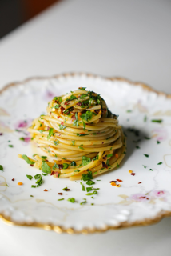

The BEST Lasagna

Description
Inspired by the film "Chef", personalized.
Ingredients
Serves 2-3
- 1 box of dried spaghetti
- 1 whole bulb of garlic, thinly sliced
- 1 whole lemon, juiced
- 1 tbsp red chili flake
- 1 cup finely chopped parsley
- 1 cup microplaned parmesean
- 1/4 cup extra virgin olive oil
- Salt and pepper to taste
Method
- Bring a large pot of salted water to a boil, preheat a saucepan on medium heat.
- Begin boiling pasta, add olive oil to the saucepan until the oil shimmers.
- Once the oil is shimmering, add the garlic and chili flake and slowly stir, do not let it brown.
- Once the garlic turns past its shade of blonde, turn off the heat and finish cooking the pasta.
- Reserve 1 cup of the pasta water, drain the pasta, and add the pasta back into the saucepan.
- Turn the heat back onto medium-high and add the lemon juice, half of the pasta water, half of the shaved parmeseasn, and chopped parsley.
- Mix until the pasta water and infused olive oil emulsify into a sauce (add extra pasta water if needed), add salt and pepper to desired taste.
- Serve with the remainder of the parmesean, ENJOY.
Return to Home